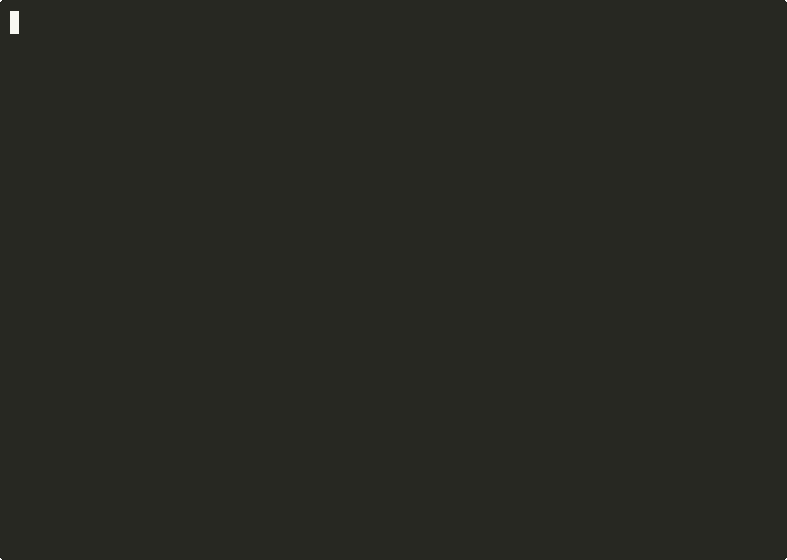

@vk0/agent-claim-mcp
File ownership coordination for parallel AI agents sharing one worktree. Claim paths before edits, detect collisions, release when done. 3 tools, one local JSON ledger. No orchestration platform.

Quick start
Runs through npx — nothing to install globally, nothing
leaves your machine.
npx -y @vk0/agent-claim-mcpWhen to install
Use this MCP server when your workflow already has task routing but still needs a simple lock-like primitive at edit time:
- Two or more agents can touch the same repo in parallel.
- You want collision detection before file edits, not after merge conflicts.
- You want claims to expire automatically with TTLs.
- You want a narrow primitive another agent can understand from name + description alone.
- You do not want a bundled rules engine, queue runner, or orchestration platform.
See it in action
coder-A claims src/foo.ts, coder-B collides and gets an
explicit conflict instead of
silently overwriting, coder-A releases when done:

Install
Pick your client. Everything runs through npx — nothing
to install globally.
{
"mcpServers": {
"agent-claim": {
"command": "npx",
"args": ["-y", "@vk0/agent-claim-mcp"]
}
}
}claude mcp add --transport stdio agent-claim -- npx -y @vk0/agent-claim-mcp{
"mcpServers": {
"agent-claim": {
"command": "npx",
"args": ["-y", "@vk0/agent-claim-mcp"]
}
}
}{
"mcpServers": {
"agent-claim": {
"command": "npx",
"args": ["-y", "@vk0/agent-claim-mcp"],
"disabled": false,
"alwaysAllow": []
}
}
}Tools
claim_files
Create or refresh a file-claim entry so parallel agents see
ownership before editing. All-or-nothing: any conflict returns
ok: false with the exact overlapping paths and
owners, and writes nothing.
whose_claim
Read the ledger and explain whether a path is free or claimed — owner agent, task, note, and TTL expiry metadata for safe coordination across separate sessions.
release_claim
Remove a claim you own, by claimId or normalized
paths, so finished or reassigned work stops blocking other
agents. Only the current owner can release an active claim.
How it works
agent A ── claim_files ──┐
│ ┌──────────────────────────┐
agent B ── claim_files ──┼────▶ │ MCP server (3 tools) │
│ │ path normalization │
agent C ── whose_claim ──┘ │ TTL expiry + pruning │
└────────────┬─────────────┘
│ atomic writes
▼
~/.agent-claim-mcp/ledger.json
-
Claims live in a local JSON ledger at
~/.agent-claim-mcp/ledger.json. - Paths are normalized to absolute, so relative-path tricks cannot dodge collisions.
- Expired claims are pruned automatically on reads and writes.
- Writes use temp-file + rename semantics for atomic updates.
Local-first by design: it coordinates sessions sharing one filesystem view. It is not a hosted lock service, queue, or scheduler — pair it with your own tasking layer for anything cross-host.